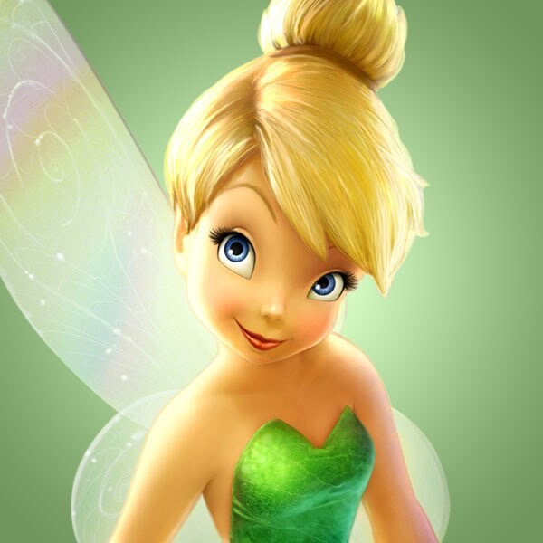

Tinker Bell |
|  |
|
Hi, I'm Tinker Bell. I am Peter Pan's close friend and companion. I live in Neverland and help Peter in his adventures. |
|
Email: tinkerbell@fairy.com |
Tinker Bell is quick to anger and becomes intensely jealous, especially towards Wendy, whom she sees as a rival for Peter's affection. Despite her flaws, she is incredibly loyal to Peter Pan and shows great bravery, such as when she drinks poisoned medicine to save Peter's life.
Tinker Bell symbolizes the magic and imagination of childhood, the belief in fairies, and the wonder of fantastical adventures.